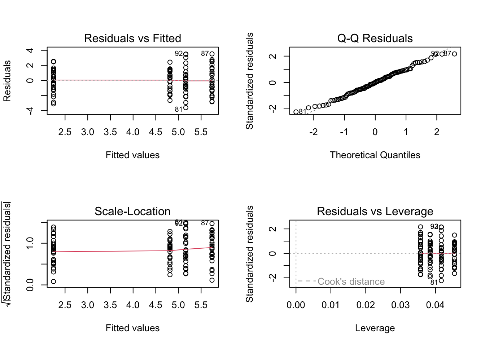
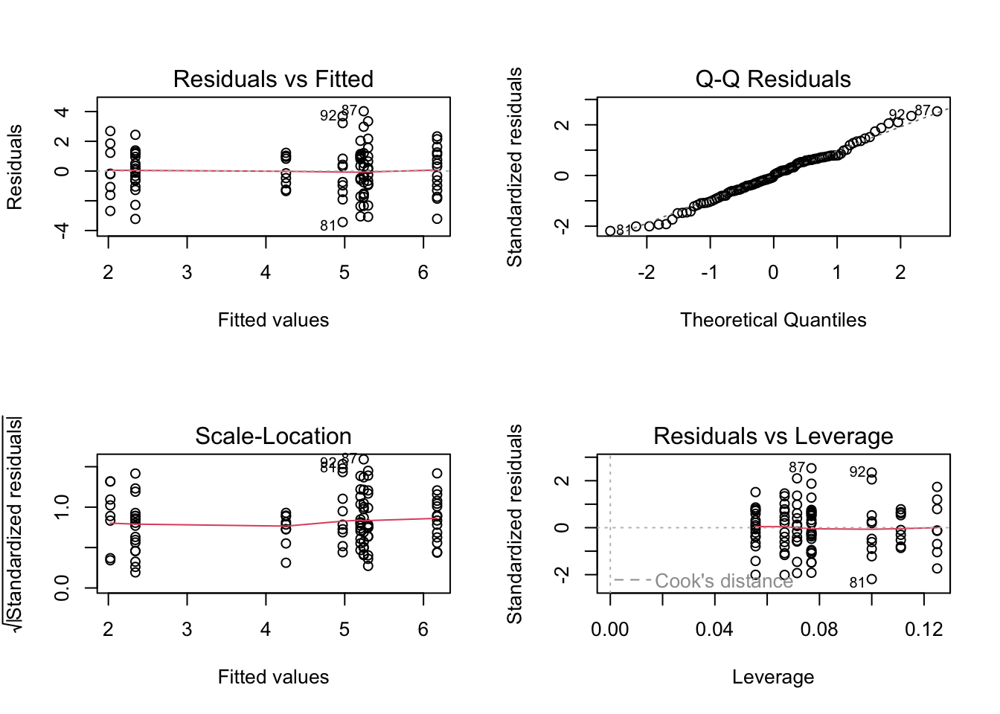
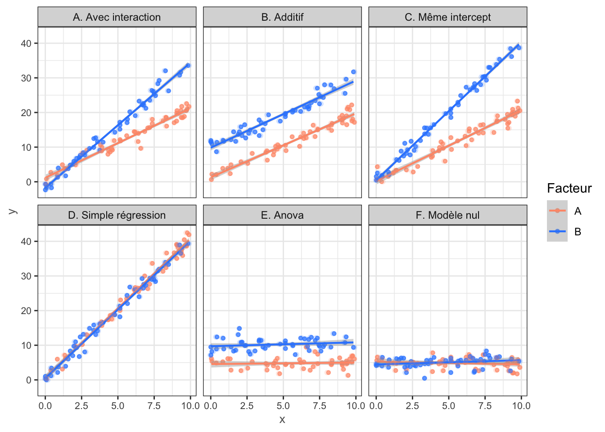

Ce chapitre est très largement inspiré, et pour tout une partie reprise du cours Modèle linéaire gaussien de Sophie Donnet. Il peut être retrouvé sur son site internet.
Préliminaires
Chargement des packages
Nous débutons en chargeant un ensemble de paquets pour la manipulation de données et des représentations graphiques.
Afficher le code
library(tidyverse) # manipulation et visualisation avancees de donneeslibrary(knitr) # Export et format de notebook R library(corrplot) # Graphiques de matriceslibrary(GGally) # Extension de ggplot2 facile d'utilisationtheme_set(theme_bw()) # theme noir et blanc par defaut de ggplot2
Contexte & Description des données
Nous reprenons l’exemple du chapitre précédent pour lequel nous rappelons le contexte.
Le papillon Apollon de l’espèce Parnassius apollo est une espèce emblématique des milieux montagnards, inscrite sur la liste rouge des espèces menacées en France avec le statut vulnérable. Il affectionne les pelouses rocailleuses, éboulis et prairies sèches d’altitude, où pousse sa plante-hôte, l’orpin Sedum sp., dont se nourrit exclusivement sa chenille. L’Apollon est particulièrement sensible aux conditions microclimatiques locales (ensolleillement, humidité du sol, etc.) ainsi qu’aux pratiques de gestion du milieu notamment le pastoralisme, qui influence l’ouverture des pelouses et donc la disponibilité en plante-hôte.
Dans le cadre d’un suivi de population mené dans le Parc national de la Vanoise, 100 sites d’observations ont été échantillonnés le long de transects, répartis sur quatre secteurs du massif. Pour chaque site, plusieurs variables environnementales ont été mesurées, ainsi que l’abondance (logarithmique) du papillon.
Le jeu de données apollo (au format .Rdata) possède 100 lignes et 6 colonnes, dont :
humidity_index : indice d’humidité du sol local du site. Des valeurs faibles correspondent à des milieux secs, favorables à l’espèce ; des valeurs élevées à des milieux humides, généralement moins favorables ;
altitude_index : indice d’altitude du site d’observation ;
orientation_index : indice d’expositation du site. Les valeurs élevées correspondent à des versants bien exposés et ensolleilés ;
logabundance : logarithme de l’abondance du papillon Apollon dénombrée par transect sur chaque type ;
sector : secteur géographique du site d’observation au sein du Parc national de la Vanoise ;
grazing : mode de gestion du site : grazed pour un site pâturé, alpage exploité ; ou ungrazed pour un site non-paturé, en évolution naturelle.
Ce jeu de données permet d’étudier comment les conditions environnementales et les pratiques de gestion influencent l’abondance du papillon Apollon dans le Parc national de la Vanoise, dans une perspective de conservation d’une espèce menacée.
Importation & Exploration du jeu de données
Afficher le code
# a modifier selon l'emplacement du repertoire de travailload('Data/apollo.Rdata')summary(apollo)
humidity_index altitude_index orientation_index logabondance.V1
Min. : 7.805 Min. :1380 Min. :-2.7783 Min. :-0.878076002828
1st Qu.:10.731 1st Qu.:1796 1st Qu.: 0.3390 1st Qu.: 2.997486496010
Median :11.195 Median :2053 Median : 0.8655 Median : 4.548821705460
Mean :11.236 Mean :2102 Mean : 0.8632 Mean : 4.488913669260
3rd Qu.:11.937 3rd Qu.:2349 3rd Qu.: 1.4746 3rd Qu.: 5.879824885520
Max. :13.350 Max. :3073 Max. : 4.2412 Max. : 9.264007023730
sector grazing
HauteMaurienne :28 ungrazed:54
HauteTarentaise:24 grazed :46
Pralognan :26
Champagny :22
Problématiques
Dans le chapitre précédent, les variables explicatives étaient quantitatives continues. Dans ce chapitre, nous souhaitons intégrer au modèle linéaires des variables explicatives qualitatives.
Nous allons d’abord étudier le cas d’une variable explicative qualitative seule : il s’agit de l’analyse de variance à un facteur. Nous verrons ensuite le cas de deux facteurs. Enfin, nous terminerons par le cas d’un facteur associé à une variable quantitative. Dans ce dernier cas “mixte”, on parle d’analyse de la covariance ou ANCOVA (ANalysis of COVAriance).
1 Analyse de variance à un facteur
1.1 Premières visualisations
Nous souhaitons savoir si l’abondance du papillon Apollon est influencé par le secteur. La variable sector possède 4 modalités : Champagny en Vanoise, Haute Maurienne, Haute Tarentaise et Pralognan en Vanoise.
Avant de réaliser un quelconque test statistique, adonnons nous à une représentation graphique permettant de comparer l’abondance du papillon Apollon en fonction du secteur d’observation. Deux représentations graphiques pertinentes sont la boîte à moustache (boxplot) et la représentation en violon (violin plot).
Bien qu’un violin plot donne une idée de la répartition des données, dans notre cas, il donne moins d’indication sur l’influence de la variable sector (ce qui ne signifie pas qu’elle n’en a pas).
Pour préciser s’il existe (d’un point de vue statistique) une influence du secteur sur l’abondance du papillon Apollon, nous allons réaliser une analyse de variance à un facteur, qui est la variable sector.
1.2 Modélisation du problème & Modèle régulier
Nous supposons que la variable explicative \(X\) est qualitative et qu’elle possède \(I\) modalités. Chaque modalité \(i\) est prise par \(n_i\) observations (de telle sorte que \(\sum_{i=1}^I n_i = n\)). Par exemple, si nous prenons l’ordre alphabétique (Champagny, HauteMaurienneHauteTarentaise et Pralognan), nous avons : \[ n_1 = 22, \quad n_2 = 28, \quad n_3 =24 \quad \text{et} \quad n_4 = 26. \] Enfin pour tout \(i\in\{1,\dots,I\}\) et tout \(j\in\{1,\dots, n_i\}\), \(y_{i,j}\) représente la valeur de la variable à expliquer pour le \(j\)-ème individu ayant pris la \(i\)-ème modalité.
On suppose que les \(y_{i,j}\) sont la réalisation de variables aléatoires i.i.d.\(\mathbf{Y}_{i,j}\). Nous cherchons à savoir si le facteur \(X\) fait varier la variable \(\mathbf{Y}\). Le modèle considéré ici est le suivant : \[ \mathbf{Y}_{i,j} \:\: = \:\: \mu_i \: + \: \varepsilon_{i} \, , \qquad \forall i\in\{1,\dots,I\} \, , \: \forall j\in\{1,\dots, n_i\} \, , \] où
les variables aléatoires \(\varepsilon_i\), appelées erreurs, sont des variables aléatoires i.i.d. de loi \(\mathcal{N}(0, \, \sigma^2)\) de variance \(\sigma^2\) inconnue ; et
les paramètres \(\mu_i\) sont inconnues et fixes (déterministes).
Le modèle est dit régulier car la matrice de design\(X^r\) est de rang plein !
Dans ce modèle, chaque paramètre \(\mu_i\) est estimé naturellement par la moyenne empirique des observations dans la modalité \(i\) : \[ \hat{\mu}_i \:\: = \:\: \frac{1}{n_i} \sum_{j=1}^{n_i} y_{i,j} \:\: = \:\: \overline{y}_{i,\cdot} \, . \] Les valeurs ajustées\(\hat{y}_{i,j}\) sont alors données par les estimations précédentes : \[ \hat{y}_{i,j} \:\: = \:\: \hat{\mu}_i \, . \] De plus, la variance inconnue \(\sigma^2\) est elle aussi naturellement estimée (sans biais) par : \[ \hat{\sigma}^2 \:\: = \:\: \frac{1}{n-I} \sum_{i,j} \big( y_{i,j} \: - \: \hat{\mu}_i \big)^2 \, . \]
Comme pour les modèles de régression linéaire simple et multiple, ce modèle s’ajuste à l’aide de la fonction lm()
Afficher le code
model <-lm(formula = logabondance ~-1+ sector,data = apollo)summary(model)
Call:
lm(formula = logabondance ~ -1 + sector, data = apollo)
Residuals:
Min 1Q Median 3Q Max
-3.6217 -1.1564 0.0049 1.1978 3.5236
Coefficients:
Estimate Std. Error t value Pr(>|t|)
sectorHauteMaurienne 5.7404 0.3131 18.334 < 2e-16 ***
sectorHauteTarentaise 5.1625 0.3382 15.265 < 2e-16 ***
sectorPralognan 2.2450 0.3249 6.909 5.32e-10 ***
sectorChampagny 4.8132 0.3532 13.627 < 2e-16 ***
---
Signif. codes: 0 '***' 0.001 '**' 0.01 '*' 0.05 '.' 0.1 ' ' 1
Residual standard error: 1.657 on 96 degrees of freedom
Multiple R-squared: 0.8932, Adjusted R-squared: 0.8887
F-statistic: 200.6 on 4 and 96 DF, p-value: < 2.2e-16
La sortie est peu ou prou similaire à la sortie d’une régression linéaire multiple. Nous retrouvons :
un tableau Residuals: donnant un court résumé descriptif des résidus ;
un tableau Coefficient: donnant une estimation des paramètres \(\mu_i\) (colonne Estimate), l’écart-type associé à l’estimation (colonne Std. Error), la valeur de la statistique de test de pertinence de la modalité (colonne t value) et la \(p\)-valeur du test (colonne Pr(>|t|)) ;
une estimation de l’écart-type inconnu \(\sigma^2\) (ligne Residuals standard error) ;
les coefficients de détermination (ligne Multiple R-squared:...) ; et
le résumé du test de Fisher global du modèle (dernière ligne F-statistic:...).
Le test global de Fisher n’a que peu d’intérêt ici. En effet, il teste : \[ (\mathcal{H}_0): \mu_1 =\mu_2=\mu_3=\mu_4=0 \qquad \text{contre} \qquad (\mathcal{H}_1): \text{"l'un des }\mu_i\text{ n'est pas nul}" \, . \] Une question plus pertinente est alors : la localité du site d’observationinfluence-t-elle l’abondance du papillon Apollon ?
Cette question se traduit par le test suivant : \[ (\mathcal{H}_0): \mu_1 =\mu_2=\mu_3=\mu_4 \qquad \text{contre} \qquad (\mathcal{H}_1): \text{"les }\mu_i\text{ ne sont pas tous égaux}" \, . \] Pour répondre à cette question, nous introduisons un effet moyen \(\mu\), c’est-à-dire dans notre contexte, une ordonnée à l’origine.
1.3 Modèle singulier
Introduisons un effet moyen \(\mu\) dans le modèle précédent. Supposons que les variables \(y_{i,j}\) sont la réalisation de variables aléatoires \(\mathbf{Y}_{i,j}\), avec : \[ \mathbf{Y}_{i,j} \:\: = \:\: \mu \: + \: \alpha_i \: + \: \varepsilon_{i,j} \, , \qquad \forall i\in\{1,\dots, I\} \, , \, \forall j\in\{1,\dots,n_i\} \, . \] Pour chaque modalité \(i\), \(\alpha_i\) est l’effet de la \(i\)-ème modalité sur la variable à expliquer \(y\) par rapport à l’effet moyen, ou autrement écrit : \[ \mu_i \:\: = \:\: \mu \: + \: \alpha_i \quad \text{qui se lit aussi } \alpha_i \:\: = \:\: \mu_i \: - \: \mu \, . \] Le paramètre \(\mu\) est vu comme un niveau de référence et \(\alpha_i\) s’entend alors comme une différence par rapport à ce niveau de référence.
Il y a donc \(I+1\) paramètres à estimer \(\mu\) et les paramètres \(\alpha_i\). La matrice de design \(X^s\) est alors \[ X^s \:\: = \:\: \begin{pmatrix} 1 & 1 & & & \\ \vdots & & & & \\ 1 & 1 & & & \\ 1 & & 1 & & \\ \vdots & & \vdots & & \\ 1 & & 1 & & \\ \vdots & & & \ddots & \\1 & & & & 1 \\ \vdots & & & & \vdots \\ 1 & & & & 1 \\ \end{pmatrix} \, . \] Contrairement au modèle précédent, cette nouvelle matrice de design \(X^s\) n’est plus de rang plein ; ce qui pose des problèmes d’identifiabilité pour l’estimation des paramètres. En effet, nous disposons de \(I\) équations \(\mu_i = \mu + \alpha_i\), pour estimer \(I+1\) paramètres … Ce modèle est dit singulier. Pour palier à ce problème, nous devons introduire une nouvelle contrainte (linéairement indépendante des dernières).
1.3.1 Rendre le modèle identifiable en le contraignant
Différentes contraintes naturelles peuvent être introduites :
Contrainte \(\mu = 0\) : correspondant au modèle régulier.
Contrainte \(\alpha_1 = 0\) : impliquant \(\mu= \mu_1\). L’effet moyenne est la première modalité. Les autres contraintes \(\alpha_1 = \mu_i - \mu_1\) mesurent alors les différences des autres modalités avec cette modalité de référence. (Les contraintes \(\alpha_j=0\) sont similaires.)
Contrainte \(\displaystyle{\sum_{i=1}^I} \alpha_i = 0\) : impliquant que l’effet moyen est la moyenne des effets de chaque modalité. En effet, puisque pour tout \(i\in\{1,\dots,I\}\), \(\mu+\alpha_i = \mu_i\), nous avons : \[ \sum_{i=1}^I \mu \: + \: \sum_{i=1}^I \alpha_i \:\: = \:\: \sum_{i=1}^I\mu_i \, . \] Ainsi, sous la contrainte \(\displaystyle{\sum_{i=1}^I} \alpha_i = 0\), nous en déduisons que : \[ \mu \:\: = \:\: \frac{1}{I} \sum_{i=1}^I \mu_i \, . \]
Contrainte linéaire quelconque : en utilisant l’option contrasts ou C(...).
Par défaut, c’est la contrainte \(\alpha_1=0\) qui est utilisé pour la fonction lm().
1.3.2 Estimation des paramètres du modèle singulier
Plaçons-nous sous la contrainte \(\alpha_1=0\). Par identification dans \(\mu_1 = \mu + \alpha_1\), nous avons \(\mu_1 = \mu\). Une estimation de \(\mu\) est alors : \[ \hat{\mu} \:\: = \:\: \hat{\mu}_1 \:\: = \:\: \frac{1}{n_1}\sum_{j=1}^{n_1}y_{1,j} \:\: = \:\: \overline{y}_{1,\cdot} \, . \] Puis, de la contrainte \(\mu_2=\mu+\alpha_2\) ré-écrite sous la forme \(\alpha_2 = \mu_2 - \mu\), nous tirons, de l’estimation précédente de \(\hat{\mu}\), une estimation de \(\alpha_2\) : \[ \hat{\alpha}_2 \:\: = \:\: \hat{\mu}_2 \: - \: \hat{\mu} \:\: = \:\: \frac{1}{n_2}\sum_{j=1}^{n_2} y_{2,j} \: - \: \frac{1}{n_1}\sum_{j=1}^{n_1} y_{1,j} \:\: = \:\: \overline{y}_{2,\cdot} \: - \: \overline{y}_{1,\cdot} \, . \] De la même manière, pour \(i\in\{2,\dots,I\}\) nous obtenons une estimation du paramètre \(\alpha_i\), de la contrainte \(\mu_i = \alpha_i + \mu\) réécrite sous la forme \(\alpha_i = \mu_i - \mu\) : \[ \hat{\alpha}_i \:\: = \:\: \hat{\mu}_i \: - \: \hat{\mu} \:\: = \:\: \frac{1}{n_i}\sum_{j=1}^{n_i} y_{i,j} \: - \: \frac{1}{n_1}\sum_{j=1}^{n_1} y_{1,j} \:\: = \:\: \overline{y}_{i,\cdot} \: - \: \overline{y}_{1,\cdot} \, . \]
Attention toutefois, quelque soit l’écriture du modèle nous obtenons les mêmes résultats en terme de prédiction et tests statistiques. La différence dans l’écriture du modèle réside dans l’interprétation des coefficients et donc dans l’interprétation des résultats des tests statistiques. Par exemple, pour la contrainte \(\alpha_1=0\) :
le coefficient de l’intercept correspond à l’effet de la première modalité ;
les autres coefficients correspondent aux différences d’effet avec cette première modalité ;
le test de Fisher associé à ce modèle teste les hypothèses : \[ (\mathcal{H}_0):\alpha_2 = \alpha_3 = \dots = \alpha_I = 0 \qquad \text{contre} \qquad (\mathcal{H}_1):\exists i\in\{1,\dots,I\} : \alpha_i \ne0 \, . \] Ce qui correspond donc bien à un test sur l’égalité des effets de chaque modalité.
1.3.3 Analyses numériques
Vérifions, en réalisant un test global de Fisher, si le secteur influence l’abondance du papillon Apollon (et confirme ce que nous avons pu entrevoir lors de la comparaison des boites à moustaches.)
Afficher le code
model <-lm(formula = logabondance ~ sector, data = apollo)summary(model)
Call:
lm(formula = logabondance ~ sector, data = apollo)
Residuals:
Min 1Q Median 3Q Max
-3.6217 -1.1564 0.0049 1.1978 3.5236
Coefficients:
Estimate Std. Error t value Pr(>|t|)
(Intercept) 5.7404 0.3131 18.334 < 2e-16 ***
sectorHauteTarentaise -0.5779 0.4609 -1.254 0.2130
sectorPralognan -3.4954 0.4512 -7.746 9.74e-12 ***
sectorChampagny -0.9271 0.4720 -1.964 0.0524 .
---
Signif. codes: 0 '***' 0.001 '**' 0.01 '*' 0.05 '.' 0.1 ' ' 1
Residual standard error: 1.657 on 96 degrees of freedom
Multiple R-squared: 0.4163, Adjusted R-squared: 0.3981
F-statistic: 22.83 on 3 and 96 DF, p-value: 3.075e-11
La \(p\)-valeur du test de Fisher est très basse (3.075e-11), on rejette \((\mathcal{H}_0)\) : nous pouvons conclure, avec un risque d’erreur de 1ère espèce de 5% (par exemple), que le secteur influence l’abondance du papillon Apollon.
Remarquons que nous obtenons les mêmes résultats entre les deux contraintes \(\mu=0\) et \(\alpha_1=0\). Nous pouvons retrouver les résultats de la première sortie (sous la contrainte \(\mu=0\)) :
Estimate
sectorHauteMaurienne
5.7407
sectorHauteTarentaise
5.1625
sectorPralognan
2.2450
sectorChampagny
4.8132
à partir des résultats de la seconde (sous la contrainte \(\alpha_1=0\)) :
Estimate
(Intercept)
5.7407
sectorHauteTarentaise
-0.5779
sectorPralognan
-3.4954
sectorChampagny
-0.9271
Il est possible de changer la contrainte (nous rapelons que cela implique un changement d’interprétation). Pour prendre la seconde modalité comme référence, nous pouvons le faire à l’aide de la commande suivante :
Afficher le code
summary(lm(formula = logabondance ~C(sector, base =2), data = apollo))
Call:
lm(formula = logabondance ~ C(sector, base = 2), data = apollo)
Residuals:
Min 1Q Median 3Q Max
-3.6217 -1.1564 0.0049 1.1978 3.5236
Coefficients:
Estimate Std. Error t value Pr(>|t|)
(Intercept) 5.1625 0.3382 15.265 < 2e-16 ***
C(sector, base = 2)HauteMaurienne 0.5779 0.4609 1.254 0.213
C(sector, base = 2)Pralognan -2.9175 0.4690 -6.221 1.29e-08 ***
C(sector, base = 2)Champagny -0.3493 0.4890 -0.714 0.477
---
Signif. codes: 0 '***' 0.001 '**' 0.01 '*' 0.05 '.' 0.1 ' ' 1
Residual standard error: 1.657 on 96 degrees of freedom
Multiple R-squared: 0.4163, Adjusted R-squared: 0.3981
F-statistic: 22.83 on 3 and 96 DF, p-value: 3.075e-11
Si nous voulons utiliser la contrainte \(\displaystyle{\sum_{i=1}^I \alpha_i =0}\), il suffit de préciser l’option base = sum de la fonction C :
Afficher le code
summary(lm(formula = logabondance ~C(sector, sum), data = apollo))
Call:
lm(formula = logabondance ~ C(sector, sum), data = apollo)
Residuals:
Min 1Q Median 3Q Max
-3.6217 -1.1564 0.0049 1.1978 3.5236
Coefficients:
Estimate Std. Error t value Pr(>|t|)
(Intercept) 4.4903 0.1663 26.993 < 2e-16 ***
C(sector, sum)1 1.2501 0.2769 4.514 1.80e-05 ***
C(sector, sum)2 0.6722 0.2913 2.308 0.0232 *
C(sector, sum)3 -2.2453 0.2837 -7.916 4.28e-12 ***
---
Signif. codes: 0 '***' 0.001 '**' 0.01 '*' 0.05 '.' 0.1 ' ' 1
Residual standard error: 1.657 on 96 degrees of freedom
Multiple R-squared: 0.4163, Adjusted R-squared: 0.3981
F-statistic: 22.83 on 3 and 96 DF, p-value: 3.075e-11
Sur ces trois sorties, remarquons que la description des résidus (tableau Residuals) et les trois dernières lignes concernant l’estimation de l’écart-type \(\sigma\), les coefficients de détermination et le test de Fisher global sont exactement les mêmes.
1.4 Validation du modèle & Comparaison de traitements
1.4.1 Analyse des résidus
La validation du modèle repose sur l’analyse des résidus, estimateurs des erreurs \(\varepsilon_{i,j}\). Rappelons que les erreurs doivent satisfaire les conditions suivantes :
Comme dans le cadre de la régression linéaire multiple, Puisque nous n’avons évidemment pas accès aux erreurs \(\varepsilon_{i,j}\), ces propriétés doivent être vérifiées sur le modèle ajusté, c’est-à-dire sur les résidus estimés ${i,j} = {i,j} - y_{i,j} $. Elles peuvent l’être l’aide des graphiques suivants :
Afficher le code
par(mfrow =c(2,2))plot(model)

Il semble n’y avoir aucune obstruction quant aux postulats [P1]-[P4] de validation du modèle.
La description de ces différents graphiques a été réalisée en détail dans le chapitre précédent. Remarquons simplement qu’il n’y a que quatre valeurs pour les valeurs ajustées \(\hat{y}_{i,j}\). Ce n’est pas une erreur puisque nous avons prédit la valeur \(y_{i,j}\) par \(\hat{\mu} + \hat{\alpha}_i\), ce qui donne bien \(I\) valeurs possibles.
1.4.2 Tests de comparaison multiple
La conclusion du test global de Fisher effectué précédemment est (qu’avec un risque d’erreur de 1ère espèce de 5%) que le secteur influence l’abondance du papillon Apollon : au moins deux secteurs ont des abondances statistiquement différentes. Cependant, le test global de Fisher ne nous permet de conclure quels secteurs sont statistiquement différents. Peut-être y a-t-il des groupes de secteurs homogènes ? Ou peut-être sont-ils tous différents (deux à deux) ?
Pour répondre à ces questions, nous pouvons mettre en place une procédure de test de comparaison multiple. Nous renvoyons au cours de 1ère année Introduction à l’Inférence Statistique pour plus de précision sur les tests multiples, la catastrophe des \(p\)-valeurs et de la multiplicité des tests, des procédures de corrections, ainsi que les tests de comparaison possible dans ce cadre de travail.
Nous ne donnons ici que la commande permettant d’effectuer des tests de Student de comparaison des modalités 2 à 2, avec une correction de type Bonferroni.
Pairwise comparisons using t tests with pooled SD
data: apollo$logabondance and apollo$sector
HauteMaurienne HauteTarentaise Pralognan
HauteTarentaise 1.00 - -
Pralognan 5.8e-11 7.7e-08 -
Champagny 0.31 1.00 3.6e-06
P value adjustment method: bonferroni
Nous pouvons conclure au risque d’erreur de 1ère espèce de 5% que l’abondance à Pralognan est statistiquement différente de l’abondance en Haute Maurienne, ou Haute Tarentaise, ou à Champagny. Nous ne pouvons en revanche pas conclure (pour ce même risque d’erreur de 1ère espèce) que l’abondance en Haute Maurienne, Haute Tarentaise et à Champagny sont différentes.
1.5 Remarque sur la décomposition de variance
Pour conclure cette partie sur l’analyse de variance à un facteur. Rappelons le théorème de décomposition de variance vue en 1ère année. En utilisant la décomposition : \[ y_{i,j} \: - \: \overline{y} \:\: = \:\: y_{i,j} \: - \: \overline{y}_{i,\cdot} \: + \: \overline{y}_{i,\cdot} \: - \: \overline{y} \, , \] nous pouvons montrer que : \[ \underbrace{\sum_{i,j} \big(y_{i,j} \: - \: \overline{y}\big)^2}_{\text{Variation totale}} \:\:\:\: = \:\:\:\: \underbrace{\sum_{i=1}^I n_i \, \big(\overline{y}_{i,\cdot} \: - \: \overline{y} \big)^2}_{\text{Variation inter-groupes}} \:\: + \:\: \underbrace{\sum_{i,j} \big(y_{i,j} \: - \: \overline{y}_{i,\cdot}\big)^2}_{\text{Variation intra-groupes}} \] Il s’agit exactement de la formule de décomposition de variance vue au chapitre précédent : \[ \mathrm{SCT} \:\: = \:\: \mathrm{SCM} \: + \: \mathrm{SCR} \, . \]
2 Analyse de variance à deux facteurs
Comme dans le cadre de la régression linéaire simple, l’abondance du papillon Apollon peut être influencé par différents facteurs (pas seulement le secteur). Nous allons dans cette partie intégrer à notre étude un second facteur : ici il s’agit du mode de gestion du site d’observation. Ce facteur possède deux modalités : pâturage (grazed) et non-paturage (ungrazed).
Nous pouvons généraliser les résultats de cette partie à un nombre quelconque de facteurs. Afin de privillégier la clareté et d’alléger les notations, nous nous restreignons au cas de deux facteurs.
2.1 Modèle régulier & Modèle singulier
Supposons que le premier facteur ait \(I\) modalités et le second \(J\) modalités. Notons \(y_{i,j,k}\) la \(k\)-ème observation dans les modalités \(i\) pour le premier facteur et \(j\) pour le second facteur. Notons \(n_{i,j}\) le nombre d’observations ayant les modalités \(i\) et \(j\) (pour le premier et second facteur respectivement).
Dans la suite \(i\) (resp. \(j\)) sera exclusivement utilisé pour une modalité du premier (resp. second) facteur.
2.1.1 Modèle régulier
Commençons par introduire le modèle régulier. Nous supposons que les valeurs \(y_{i,j,k}\) sont la réalisation de variables aléatoires \(\mathbf{Y}_{i,j,k}\) suivant le modèle : \[ \mathbf{Y}_{i,j,k} \:\: = \:\: \mu_{i,j} \: + \: \varepsilon_{i,j,k} \, , \qquad \forall i \in\{1,\dots, I\} , \, \forall j \in\{1,\dots,J\} \, , \forall k\in\{1,\dots,n_{i,j}\} \, , \] où
les erreurs \(\varepsilon_{i,j,k} \: \overset{\text{i.i.d.}}{\sim} \: \mathcal{N}(0, \, \sigma^2)\) ; et
les paramètres \(\mu_{i,j}\) sont inconnus et fixes (déterministes).
Posons \[ \overline{y}_{i,j,\cdot} \:\: = \:\: \frac{1}{n_{i,j}} \sum_{k=1}^{n_{i,j}} y_{i,j,k} \] la moyenne des \(n_{i,j}\) observations ayant les modalités \(i\) et \(j\).
Alors une estimation (sans biais et) naturelle du paramètre \(\mu_{i,j}\) est \(\hat{\mu}_{i,j} = \overline{y}_{i,j,\cdot}\).
Par conséquent, une estimation de la variance inconnue \(\sigma^2\) est donnée par : \[ \hat{\sigma}^2 \:\: = \:\: \frac{1}{n-IJ} \sum_{i,j,k} \big( y_{i,j,k} \: - \: \hat{\mu}_{i,j} \big)^2 \, . \]
2.1.2 Modèle singulier
Comme dans le cas de l’analyse de variance à un facteur, afin de mieux analyser l’influence des facteurs, nous introduisons de nouveaux termes. Considérons donc la décomposition suivante de la moyenne \(\mu_{i,j}\) inconnue : \[ \mu_{i,j} \:\: = \:\: \mu \: + \: \alpha_i \: + \: \beta_j \: + \: \gamma_{i,j} \, . \] Les paramètres sont interprétés de la manière suivante :
\(\mu\) : effet moyen (dépendant comme précédemment des contraintes imposés) ;
\(\alpha_i\) : effet principal de la modalité \(i\) du premier facteur ;
\(\beta_j\) : effet principale de la modalité \(j\) du second facteur ; et
\(\gamma_{i,j}\) : effet d’interaction entre les modalités \(i\) et \(j\) du premier et second facteur resp.
Avec cette réécriture (qui n’est pas unique), nous avons décomposé les \(I\times J\) paramètres \(\mu_{i,j}\) en \(1 + I + J + I\times J\) nouveaux paramètres, soit \(1+I+J\) paramètres de plus à estimer. Il faut donc imposer \(1+I+J\) contrainteslinéairement indépendantes, dont voici quelques exemples classiques :
contrainte de type analyse par cellule, qui correspond au modèle régulier : \[ \mu = 0\, , \qquad \forall i\in\{1,\dots,I\}, \, \alpha_i = 0 \quad \text{et} \quad \forall j\in\{1,\dots,J\}, \, \beta_j = 0 \, . \]
contrainte de type cellyle de référence, qui est la contrainte par défaut de la fonction lm : \[ \alpha_1 = 0 \, , \qquad \beta_1 = 0 \, , \qquad \forall j\in\{1,\dots,J\},\, \gamma_{1,j} = 0 \, \quad \text{et} \quad \forall i\in\{1,\dots,I\},\, \gamma_{i,1} = 0 \, . \]
La validation du modèle reposant sur les mêmes postulats que dans la section précédente et le chapitre précédent, nous renvoyons à ce dernier pour une description détailler de la méthodologie concernant la validation du modèle.
Afficher le code
par(mfrow =c(2,2))plot(model1)

Il semble n’y avoir aucune obstruction quant aux postulats [P1]-[P4] de validation du modèle.
2.3 Test de pertinence du modèle
Le modèle de régression est certes validé, mais cela n’implique qu’il soit “pertinent”, ou autrement écrit cela n’implique pas que les facteurs (l’un, l’autre ou les deux) secteur et mode de gestion influencent l’abondance du papillon.
Le test global de Fisher teste les hypothèses suivantes : \[ (\mathcal{H}_0): \mathbf{Y}_{i,j,k} \: = \: \mu \: + \: \varepsilon_{i,j,k} \quad \text{contre} \quad (\mathcal{H}_1):\mathbf{Y}_{i,j,k} \: = \: \mu \: + \: \alpha_i \: + \: \beta_j \: + \: \gamma_{i,j} \: + \: \varepsilon_{i,j,k} \, . \] Le résultat de ce test est donné à la dernière ligne de la sortie de la fonction summary.
La \(p\)-valeur du test global de Fisher est 1.364e-09, donc au risque d’erreur de 1ère espèce de 5% nous rejetons \((\mathcal{H}_0)\) : au moins l’un des facteurs a une influence sur l’abondance du papillon Apollon (c’est-à-dire qu’au moins un des \(\alpha_i\) et/ou \(\beta_j\) et/ou \(\gamma_{i,j}\) est non nul).
Nous pourrons également noter que le coefficient de détermination n’est pas très élevé.
2.3.1 Tests de comparaison de modèles
Maintenant que nous savons que le modèle est pertinent, nous aimerions être plus fin.e dans l’analyse : est-ce seulement l’un des facteurs qui influence la variable d’intérêt, ou les deux ? y a-t-il une interaction entre les facteurs ou influencent-ils la variable de manière indépendante ?
\(\mathcal{M}_{\mu,\alpha,\beta,\gamma}\) est le modèle complet. Il prend en compte tous les phénomènes, mais comporte beaucoup de paramètres ;
\(\mathcal{M}_{\mu,\alpha,\beta}\) est le modèle additif. Il suppose l’absence d’interacton entre les facteurs.
Avant de réaliser des tests sur l’influence des facteurs pris indépendamment, il est important de tester l’interaction de ces derniers. Le test est le suivant : \[ (\mathcal{H}_0):\mathbf{Y}_{i,j,k}\:=\:\mu\:+\:\alpha_i\:+\:\beta_j\:+\:\varepsilon_{i,j,k} \quad \text{contre} \quad (\mathcal{H}_1):\mathbf{Y}_{i,j,k}\:=\:\mu\:+\:\alpha_i\:+\:\beta_j\:+\:\gamma_{i,j}\:+\:\varepsilon_{i,j,k} \, . \] Il s’agit d’un test de modèles emboités (ou de sous-modèles) : nous réalisons donc un test global de Fisher (de comparaison de modèles). Dans ce cadre, la statistique de test est : \[ F \:\: = \:\: \frac{\displaystyle{\frac{1}{\mathrm{rg}\Big(X^{(\mu,\alpha,\beta,\gamma)}\Big) \: - \: \mathrm{rg}\Big(X^{(\mu,\alpha,\beta)}\Big)} \Big( \mathrm{SCR}_{\mu,\alpha,\beta} \: - \: \mathrm{SCR}_{\mu,\alpha,\beta,\gamma} \Big)}}{\displaystyle{\frac{1}{n \: - \: \mathrm{rg}\Big(X^{(\mu,\alpha,\beta,\gamma)}\Big)} \, \mathrm{SCR}_{\mu,\alpha,\beta,\gamma}}} \] qui, sous \((\mathcal{H}_0)\), suit la loi de Fisher à \(\big( (I-1)(J-1),\, n-IJ \big)\) degrés de liberté. Nous rejetons donc \((\mathcal{H}_0)\) au risque de 1ère espèce \(\alpha\), si \(F > q_{1-\alpha}^{\mathcal{F}\big((I-1)(J-1),\,n-IJ\big)}\).
Sous R, le test de comparaison de Fisher de deux modèles peut s’effectuer à l’aide de la fonction anova.
Analysis of Variance Table
Model 1: logabondance ~ sector * grazing
Model 2: logabondance ~ sector + grazing
Res.Df RSS Df Sum of Sq F Pr(>F)
1 92 251.54
2 95 263.41 -3 -11.869 1.447 0.2343
La \(p\)-valeur du test de Fisher est élevée : au risque d’erreur de 1ère espèce de 5%, on ne peut pas conclure qu’il y a une interaction. Nous considérons donc dans la suite qu’il n’y a pas d’interaction, et nous sommes ramenés au modèle : \[ \mathbf{Y}_{i,j,k} \:\: = \:\: \mu \: + \: \alpha_i \: + \: \beta_j \: + \: \varepsilon_{i,j,k} \, . \]
2.4 Test des facteurs
Commençons par deux remarques méthodologiques.
Si nous avons pu enlever l’interaction, alors nous définissons le modèle sans interaction et nous testons l’effet de chaque facteur restant de manière indépendante.
Si le test des interactions rejette l’hypothèse nulle, alors il n’y a pas de sens à tester les facteurs séparément ! (Il ne peut y avoir d’interaction entre les facteurs sans les facteurs.)
Dans l’exemple conducteur de ce chapitre, nous avons montré dans la partie précédente l’absence d’interaction entre les facteurs sector et grazing. Nous souhaitons maintenant savoir si la variable grazing est pertinent dans le model model2.
Nous souhaitons donc comparer les deux modèles : \[ \mathcal{M}_{\mu,\alpha,\beta}: \mathbf{Y}_{i,j,k} \: = \: \mu \: + \: \alpha_i \: + \: \beta_j \: + \: \varepsilon_{i,j,k} \quad \text{et} \quad \mathcal{M}_{\mu,\alpha}: \mathbf{Y}_{i,j,k} \: = \: \mu \: + \: \alpha_i \: + \: \varepsilon_{i,j,k} \, . \] Il s’agit une nouvelle fois d’un test de modèles emboités. Nous réalisons donc un test de Fisher de comparaison de modèles.
Analysis of Variance Table
Model 1: logabondance ~ sector
Model 2: logabondance ~ sector + grazing
Res.Df RSS Df Sum of Sq F Pr(>F)
1 96 263.51
2 95 263.41 1 0.10548 0.038 0.8458
La \(p\)-valeur du test de Fisher est élevée : au risque d’erreur de 1ère espèce de 5%, on ne peut pas conclure que la variable grazing a une influence sur l’abondance du papillon Apollo. Nous considérons donc dans la suite le modèle model3 sans le facteur grazing, et nous sommes ramenés au modèle : \[ \mathcal{M}_{\mu,\alpha}:\:\mathbf{Y}_{i,j,k} \:\: = \:\: \mu \: + \: \alpha_i \: + \: \varepsilon_{i,j,k} \, . \]
Nous pouvons à présent tester l’influence de la variable sector sur l’abondance du papillon Apollon dans le modèle model3, ce qui correspond ici à une analyse de variance à un facteur que nous avons effectuer dans la section précédente.
Si nous avions précédemment conclut que le facteur grazing influençait la variable d’intérêt, nous aurions comparé les modèles : \[ \mathcal{M}_{\mu,\alpha,\beta}: \mathbf{Y}_{i,j,k} \: = \: \mu \: + \: \alpha_i \: + \: \beta_j \: + \: \varepsilon_{i,j,k} \quad \text{et} \quad \mathcal{M}_{\mu,\beta}: \mathbf{Y}_{i,j,k} \: = \: \mu \: + \: \beta_j \: + \: \varepsilon_{i,j,k} \, . \]
Analysis of Variance Table
Model 1: logabondance ~ grazing
Model 2: logabondance ~ sector
Res.Df RSS Df Sum of Sq F Pr(>F)
1 98 442.73
2 96 263.51 2 179.22 32.645 1.527e-11 ***
---
Signif. codes: 0 '***' 0.001 '**' 0.01 '*' 0.05 '.' 0.1 ' ' 1
La \(p\)-valeur étant très faible, nous aurions conclus au risque d’erreur de 1ère espèce de 5%, que le facteur sector influence la variable d’intérêt, c’est-à-dire que nous aurions conservé le modèle \(\mathcal{M}_{\mu,\alpha,\beta}\).
2.5 Analyse de variance à trois facteurs
Pour réaliser une analyse de variance à trois facteurs (ou plus), nous procéderons de la même façon. La tâche s’avère plus fastidieuse.
Le modèle ANOVA à trois facteurs s’écrit de la manière suivante : \[ \mathbf{Y}_{i,j,k,l} \:\: = \:\: \mu \: + \: \underbrace{\alpha_i \: + \: \beta_j \: + \: \gamma_k}_{\text{Effets des facteurs}} \: + \: \underbrace{\delta_{i,j} \: + \: \zeta_{i,k} \: + \: \eta_{j,k}}_{\text{Effets des interactions 2 à 2}} \: + \: \underbrace{\theta_{i,j,k}}_{\text{Effet de l'interaction des 3 facteurs}} \: + \: \varepsilon_{i,j,k,l} \, . \] Il y a donc beaucoup plus de paramètres à estimer. L’étude des interactions s’avère également plus complexe. Dans un soucis de simplification, parfois justifiée par l’expérience, il est possible de supposer l’absence d’interaction.
3 Analyse de la covariance
Les deux parties précédentes étudiaient l’étude de l’influence de variables explicatives toutes exclusivement quantitatives (continues) ou toutes eexclusivement qualitatives.
Dans cette partie, nous présentons l’analyse de la covariance qui intègre les deux types de variables.
Par exemple, supposons que nous étudions l’influence d’une variable explicative quantitative \(x\) et d’un facteur sur une variable d’intérêt \(y\). Supposons qu’il y ait \(I\) modalités pour le facteur, et \(n_i\) observations pour la \(i\)-ème modalité. Alors pour chacune des modalités \(i\in\{1,\dots,I\}\), nous rassemblons les \(n_i\) observations. Ce qui donne :
\((y_{i,j})_{1\le j\le n_i}\) pour la variable d’intérêt \(y\) ; ainsi que
\((X-{i,j})_{1\le j\le n_i}\) pour la variable explicative quantitative \(x\).
Nous avons alors, possiblement, une régression liénaire sur la variable quantitative \(x\) différente selon les niveaux du facteur ! Illustrons-le sur une simulation.
Afficher le code
library(dplyr)library(patchwork) # pour assembler les 6 panneaux (ou facet_wrap si un seul data.frame)
Pour ce nouveau modèle, nous supposons que la variable d’intérêt \(y_{i,j}\) est la réalisation d’une variable aléatoire \(\mathbf{Y}_{i,j}\) avec : \[ \mathbf{Y}_{i,j} \:\: = \:\: b_i \: + \: a_i \, x_{i,j} \: + \: {\boldsymbol\varepsilon}_{i,j} \, , \qquad i\in\{1,\dots,I\},\,j\in\{1,\dots,n_i\} \, , \] où
les erreurs \({\boldsymbol\varepsilon}_{i,j} \: \overset{\mathrm{i.i.d.}}{\sim} \: \mathcal{N}(0,\,\sigma^2)\) ; et
les paramètres \(a_i\), \(b_i\) sont inconnus et fixes (déterministes).
Cette écriture correspond au modèle complet (le plus complexe) : il y a autant de droites de régression que de modalités du facteur.
3.2 Modèle singulier
Le modèle singulier précédent \[ \mathbf{Y}_{i,j} \:\: = \:\: b_i \: + \: a_i \, x_{i,j} \: + \: {\boldsymbol\varepsilon}_{i,j} \, , \qquad i\in\{1,\dots,I\},\,j\in\{1,\dots,n_i\} \, , \] peut se réécrire sous la forme suivante : \[ \mathbf{Y}_{i,j} \:\: = \:\: (\mu \: + \: \beta_i) \: + \: (\alpha\:+\:\gamma_i) \, x_{i,j} \: + \: {\boldsymbol\varepsilon}_{i,j} \, , \qquad i\in\{1,\dots,I\},\,j\in\{1,\dots,n_i\} \, , \] où \(\gamma_{i,j}\) est l’interaction entre le facteur et la variable explicative.
Plusieurs cas de figures peuvent se présenter.
Afficher le code
set.seed(42)n <-100x <-runif(n, 0, 10)fact <-rep(c("A", "B"), each = n/2)sigma <-1.5# bruit# --- A. Avec interaction : pentes ET intercepts différents ---dA <-data.frame(x = x, fact = fact,y =ifelse(fact =="A", 1+2*x, -1+3.5*x) +rnorm(n, 0, sigma))# --- B. Additif : même pente, intercepts différents ---dB <-data.frame(x = x, fact = fact,y =ifelse(fact =="A", 1+1.9*x, 10+1.9*x) +rnorm(n, 0, sigma))# --- C. Même intercept : pentes différentes, même intercept ---dC <-data.frame(x = x, fact = fact,y =ifelse(fact =="A", 0.5+2*x, 0.5+4*x) +rnorm(n, 0, sigma))# --- D. Régression simple : le facteur n'a aucun effet ---dD <-data.frame(x = x, fact = fact,y =0.5+4*x +rnorm(n, 0, sigma))# --- E. Anova : effet du facteur uniquement (pas de x) ---dE <-data.frame(x = x, fact = fact,y =ifelse(fact =="A", 5, 10) +rnorm(n, 0, sigma))# --- F. Modèle nul : ni x ni facteur n'ont d'effet ---dF <-data.frame(x = x, fact = fact,y =5+rnorm(n, 0, sigma))# On combine les 6 jeux de données avec une étiquette de panneaucombine <-function(d, label) { d$panel <- label; d }dat <-bind_rows(combine(dA, "A. Avec interaction"),combine(dB, "B. Additif"),combine(dC, "C. Même intercept"),combine(dD, "D. Simple régression"),combine(dE, "E. Anova"),combine(dF, "F. Modèle nul"))dat$panel <-factor(dat$panel, levels =c("A. Avec interaction", "B. Additif", "C. Même intercept","D. Simple régression", "E. Anova", "F. Modèle nul" ) )# --- Graphique ---ggplot(dat, aes(x = x, y = y, color = fact) ) +geom_point(size =1.2, alpha =0.7 ) +geom_smooth(method ="lm", formula ="y ~ x",se =TRUE, linewidth =0.75 ) +facet_wrap(~ panel, nrow =2 ) +geom_jitter(width =0.1,alpha =0.15 ) +scale_color_manual(values =c("#F97", "#38F") ) +theme(axis.title =element_text(size =10,color ="grey40"),axis.text =element_text(size =8),legend.position ="right" ) +labs(x ="x", y ="y", color ="Facteur" )

A. Modèle complet : \(\mathbf{Y}_{i,j} \: = \: \mu \: + \: \beta_i \: + \: (\alpha+\gamma_i) \, x_{i,j} \: + \: {\boldsymbol\varepsilon}_{i,j}\). B. Modèle additif, c’est-à-dire à interactions nulles : \[ \mathbf{Y}_{i,j} \: = \: \mu \: + \: \beta_i \: + \: \alpha \, x_{i,j} \: + \: {\boldsymbol\varepsilon}_{i,j} \, . \] C. \(\beta_i=0\) pour tout \(i\), c’est-à-dire lorsque les pentes sont différentes, mais même ordonnée à l’origine : \[ \mathbf{Y}_{i,j} \: = \: \mu \: + \: (\alpha+\gamma_i) \, x_{i,j} \: + \: {\boldsymbol\varepsilon}_{i,j} \, . \] D. \(\beta_i=\gamma_i=0\) pour tout \(i\), c’est-à-dire que le facteur n’a pas d’effet : \[ \mathbf{Y}_{i,j} \: = \: \mu \: + \: \alpha \, x_{i,j} \: + \: {\boldsymbol\varepsilon}_{i,j} \,. \] E. \(\alpha_i=\gamma_i=0\), c’est-à-dire que la covariable n’a pas d’effet : \[ \mathbf{Y}_{i,j} \: = \: \mu \: + \: \beta_i \: + \: {\boldsymbol\varepsilon}_{i,j} \, . \] F. Modèle nul, c’est-à-dire lorsque \(\alpha=\beta_i=\gamma_i =0\) pour tout \(i\) : \[ \mathbf{Y}_{i,j} \: = \: \mu \: + \: {\boldsymbol\varepsilon}_{i,j} \, . \]
3.3 Inférence
Toute l’inférence statistique se passe de la même manière que précédemment.
3.3.1 Estimation des coefficients
Nous pouvons montrer que les estimateurs des moindres carrés des paramètres \((a_i,b_i)\) sont obtenus en réalisant la régression linéaire de \(y\) contre la variable \(x\) pour les données de la modalités \(i\).
La paramètres du modèle singulier étant non-identifiables, il faut imposer des contraintes (R impose la contrainte naturelle \(\beta_1=\gamma_1=0\).)
Nous obtenons l’estimation des paramètres du modèle singulier à partir de celle des \((a_i,b_i)\).
Notons la valeur ajustée par \(\hat{y}_{i,j} \: = \: \hat{b}_i \: + \: \hat{a}_i \, x_{i,j}\). Alors la variance \(\sigma^2\) est estimée sans biais par : \[ \hat{\sigma}^2 \:\: = \:\: \frac{1}{n-2I} \sum_{i=1}^I\sum_{j=1}^{n_i} \big( y_{i,j} \: - \: \hat{y}_{i,j} \big)^2 \, . \] Les tests du facteur et de la covariance seront effectués en comparant les \(\mathrm{SCR}\) des différents modèles en compétition :
nous prendrons en compte le nombre de paramètres dans chaque modèle ;
Le test global de Fisher a une \(p\)-valeur très basse, donc au risque d’erreur de 1ère espèce de 5%, nous pouvons conclure qu’au moins un des coefficients est non nul. Autrement dit, le modèle est pertinent.
De plus, nous pouvons voir que les \(p\)-valeurs des coefficients d’interaction sont toutes élevées : au risque d’erreur de 1ère espèce de 5% (pour chaque coefficient pris indépendamment), les termes d’interactions sont nuls.
3.3.2 Test de l’interaction ou test de l’égalité des pentes
Il est possible de tester l’interaction des variables explicatives, en comparant les modèles avec et sans interaction grâce à un test de Fisher. Comme précédemment, la fonction anova permet de réaliser ce test.
Analysis of Variance Table
Model 1: logabondance ~ altitude_index + sector
Model 2: logabondance ~ altitude_index * sector
Res.Df RSS Df Sum of Sq F Pr(>F)
1 95 142.21
2 92 135.34 3 6.8598 1.5543 0.2059
Rappelons que les hypothèses de ce test d’interaction sont : \[ (\mathcal{H}_0) : \mathbf{Y}_{i,j} \: = \: \mu \: + \: \beta_i \: + \: \alpha \; x_{i,j} \: + \: {\boldsymbol\varepsilon}_{i,j} \qquad \textrm{contre} \qquad \mathbf{Y}_{i,j} \: = \: \mu \: + \: \beta_i \: + \: (\alpha+\gamma_i) \; x_{i,j} \: + \: {\boldsymbol\varepsilon}_{i,j} \, . \]
Par conséquent, la \(p\)-valeur étant élevée (0.2059), au risque d’erreur de 1ère espèce de 5%, nous ne rejetons pas \((\mathcal{H}_0)\) : nous ne pouvons pas conclure qu’il y a une interaction.
Remarquons que ce test est équivalent à un test d’égalité des pentes des différentes régressions.
3.3.3 Test de l’effet du facteur après ajustement de la covariable
Puisque nous avons jugé l’interaction non significative, il nous est maintenant possible de tester l’effet du facteur. Il est possible de le réaliser à l’aide de la fonction anova.
Afficher le code
anova(anco2)
Analysis of Variance Table
Response: logabondance
Df Sum Sq Mean Sq F value Pr(>F)
altitude_index 1 275.089 275.089 183.7740 < 2.2e-16 ***
sector 3 34.191 11.397 7.6137 0.000129 ***
Residuals 95 142.205 1.497
---
Signif. codes: 0 '***' 0.001 '**' 0.01 '*' 0.05 '.' 0.1 ' ' 1
La \(p\)-valeur du test du facteur sector est très basse (0.000129), donc au risque d’erreur de 1ère espèce de 5%, nous pouvons conclure que le secteur a un effect sur l’abondance du papillon.
Remarquons que nous aurions pu aboutir à la même conclusion pour la seconde variable altitude_index.
3.4 Analyse des résidus
Comme précédemment, le modèle d’analyse de la covariance repose sur l’hypothèse (la seule) de résidus gaussiens, centrés, de même variance et indépendants. Elles sont à vérifier sur le modèle retenu. Nous renvoyons au chapitre précédent pour l’analyse des résidus et la validation du modèle.